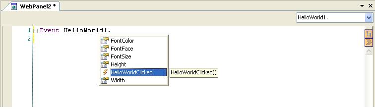

User control events
User Controls can define server side events (AJAX events). Events can be simply defined under the Events tab of the User Control Editor, as follows: After defining an event from the UCE you can see it in the User Control definition file as follows: <Events> <Event>HelloWorldClicked</Event> <Event>Event1</Event> <Event>Event2</Event> ... <Event>EventN</Event> </Events> Now, all you need to know is how to raise and handle your event. Raising eventsIn order to raise events from your control, you will only have to invoke the following: this.<EventName>() // this is under the scope of your user control class In the example of the HelloWorld control it would be as follows: this.HelloWorldClicked() A complete example for the HelloWorld would be as follows:
this.show = function()
{
///UserCodeRegionStart:[show] (do not remove this comment.)
var buffer= '<a id="myAnchor" href="#"><font face="' + this.FontFace + '" color="' + this.FontColor + '" size="' + this.FontSize + '">Hello World!!!</font></a>';
this.setHtml(buffer);
document.getElementById("myAnchor").onclick = this.HelloWorldClicked;
///UserCodeRegionEnd: (do not remove this comment.)
}
Handling eventsControl events are pretty easy to handle. GeneXus adds an intellitip for each defined event as follows: 
Remember that after the server side code is triggered, steps 2 and 3 of How does a User Control work? will be executed again on the client side (for step 2, the user control class is not created again, that is to say, only properties are assigned). Transferring data between client and serverAs you may know, GeneXus events don't have parameters. However, you can use properties to transfer data between the client and server, so the idea would be to define additional properties to handle "parameters" when necessary. You can eventually define those parameters as readonly if you don't want the programmer to change its value. Executing User Control methodsNotice that when you execute a User control method it must be implemented in the client side (part of the UserControl render file). You can call if from everywhere when it is needed but take into account that the order may change if you combine it with server-side execution. For example; take into account the following event combining standard GeneXus objects with User Controls methods execution
Event 'GeneXusSampleEvent'
procedure1.Call()
UserControlControlName.Method1()
procedure2.Call()
Endevent
Objects procedure1 and procedure2 are GeneXus objects and will be executed in the server side, then when returning the result to the client side, the Method1 method from the UserControl will be executed. In short the real execution order is the following: procedure1.Call() procedure2.Call() UserControlControlName.Method1() If your User control needs to execute server-side events create standard GeneXus objects and provide them as a Resouce (GxResources entry on the .control file). AvailabilityFor the User Control validation to work correctly (in particular, to make sure that its value is always updated before running any event that is displayed before the user control), the onfocus function implemented in the User Control base class must be invoked when this control takes focus. Example for a basic User Control where “Control” is a basic HTML control in which the following data is entered: Control.onfocus = this.onfocus; Example for CKEditor:
this.editor.on('focus', this.CreateDelegate(this, this.onfocus));
|